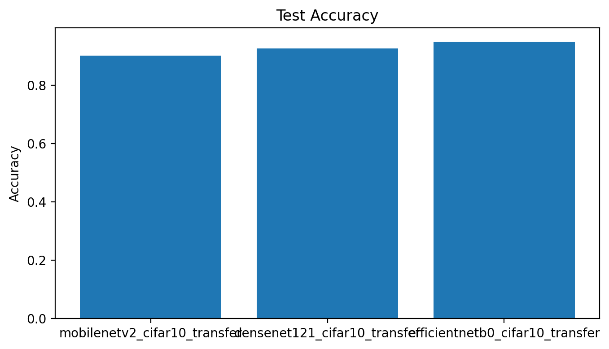
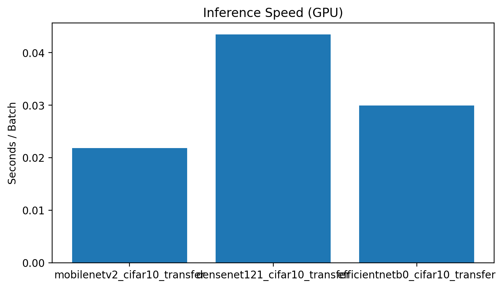
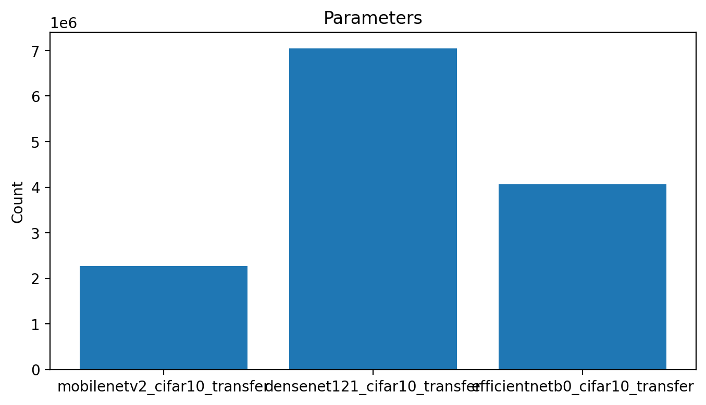
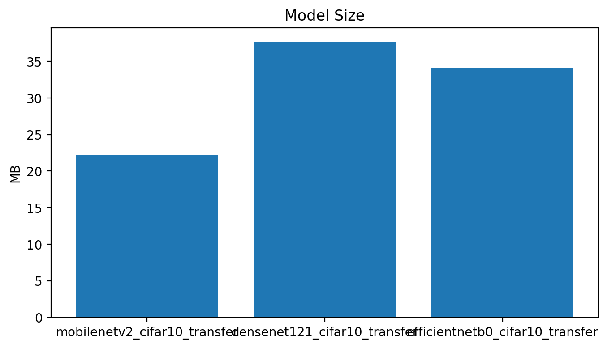
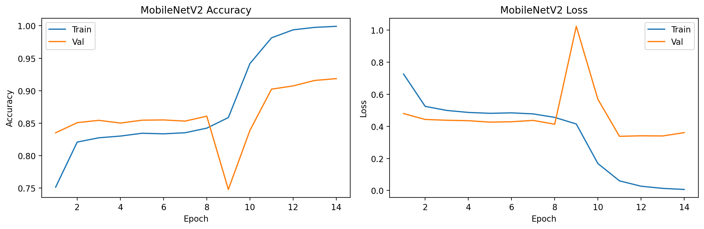
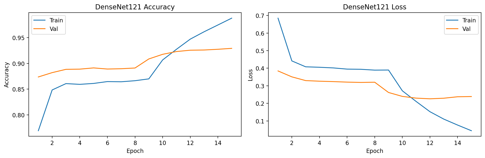
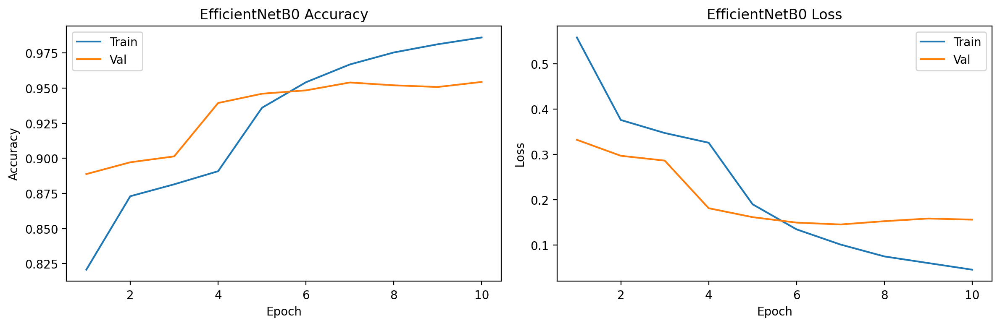

Department of Computer Science
Course: COMP-443 (Deep Learning)
Lightweight CNNs on CIFAR-10: MobileNetV2, DenseNet121, and EfficientNetB0
| Student | Ali Hamza (B23F0063AI106) & Zarmeena Jawad (B23F0115AI125) |
| Instructor | Dr. Arshad Iqbal |
| Program | B.S AI - Red |
| Semester | 6th |
| Dataset | CIFAR-10 |
| Models | MobileNetV2, DenseNet121, EfficientNetB0 |
| Framework | TensorFlow / Keras |
| Submission Date | April 27, 2026 |
Abstract— This report compares three transfer-learning backbones on CIFAR-10 under a common protocol: MobileNetV2, DenseNet121, and EfficientNetB0. Evaluation focuses on test accuracy/loss, model parameter count, model size, training time, and inference speed. EfficientNetB0 achieves the best test accuracy and loss, MobileNetV2 provides the fastest GPU and CPU inference, and DenseNet121 yields competitive accuracy but at the highest computational cost. The final recommendation is scenario-specific: MobileNetV2 for strict edge/latency constraints, EfficientNetB0 for cloud accuracy-first inference, and DenseNet121 when additional accuracy over MobileNetV2 is required despite higher resource usage.
Keywords— CIFAR-10, Transfer Learning, MobileNetV2, DenseNet121, EfficientNetB0, Inference Speed, Model Efficiency.
Report Roadmap
The objective is to compare lightweight/efficient CNN architectures for image classification and provide deployment recommendations using evidence from accuracy, loss, model complexity, training cost, and inference latency. To make grading straightforward, each assignment requirement is directly mapped to its corresponding section and figures in this report.
| Requirement | Coverage in this report |
|---|---|
| Train and compare 3 pretrained models | Sections III, V, and figures in Section VI |
| Accuracy and loss comparison | Table II and Fig. 1 |
| Model size / parameter efficiency | Table II, Fig. 3, Fig. 4 |
| Inference speed and CPU-only test | Table II, Section VII, Fig. 2 |
| Memory usage analysis | Section VIII with notebook RSS evidence |
CIFAR-10 contains 60,000 RGB images in 10 classes. The experiment uses a train/validation/test split of 45,000 / 5,000 / 10,000 with a fixed random seed. Images are resized to 224x224 and processed with model-specific ImageNet preprocessing functions. All models are trained under a consistent protocol so the comparison reflects model behavior rather than different training conditions.
Notebook:
notebooks/Assignment_04_Lightweight_CNNs_MobileNetV2_DenseNet121_EfficientNetB0_CIFAR10.ipynb
Artifacts:
models/, results/plots/,
results/tables/, reports/
Each model is initialized with ImageNet pretrained weights using a transfer-learning setup and then fine-tuned. A unified two-stage schedule is used for fairness: head training followed by partial backbone fine-tuning. This keeps experimental conditions aligned across MobileNetV2, DenseNet121, and EfficientNetB0 so the final metric differences are interpretable and defensible.
| Model | Accuracy | Loss | Params | Model Size (MB) | Train Time (min) | GPU sec/batch | CPU sec/batch |
|---|---|---|---|---|---|---|---|
| MobileNetV2 | 0.9002 | 0.3398 | 2,270,794 | 22.1755 | 5.4956 | 0.021823 | 0.285467 |
| DenseNet121 | 0.9261 | 0.2246 | 7,047,754 | 37.7080 | 9.4996 | 0.043467 | N/A |
| EfficientNetB0 | 0.9488 | 0.1618 | 4,062,381 | 34.0231 | 5.4157 | 0.029900 | N/A |
EfficientNetB0 provides the highest predictive performance with 94.88% test accuracy and the lowest loss (0.1618), making it the strongest choice when quality is the main priority. MobileNetV2 is the most efficient model, with the smallest parameter count (2.27M), smallest artifact size (22.18 MB), fastest GPU inference (0.021823 sec/batch), and available CPU benchmark (0.285467 sec/batch). DenseNet121 reaches solid accuracy (92.61%) but requires the largest resource budget in parameters, model size, training time, and GPU latency.
Figures 1-4 summarize accuracy, latency, and model complexity from the same comparison table. Together, they show a clear trade-off frontier: EfficientNetB0 maximizes accuracy while MobileNetV2 minimizes computational overhead.




The per-model learning curves validate that all three backbones converged under the selected schedule. EfficientNetB0 demonstrates the best final validation behavior, DenseNet121 converges strongly but with higher training cost, and MobileNetV2 converges quickly with lower computational burden.



The required CPU-only benchmark was executed for MobileNetV2, yielding 0.285467 sec/batch. GPU benchmarks show MobileNetV2 as the fastest model overall (0.021823 sec/batch), then EfficientNetB0 (0.029900), then DenseNet121 (0.043467). This supports MobileNetV2 as the strongest low-latency option for deployment on constrained hardware or real-time pipelines.
The notebook recorded process RSS around the benchmark stage: 114416.1367 MB before and 114495.9375 MB after benchmark execution (delta: 79.8008 MB). This is a global benchmark-session memory reading and not per-model isolated runtime memory.
Per-model memory evidence in current artifacts is represented by exported model size: MobileNetV2 (22.18 MB), EfficientNetB0 (34.02 MB), and DenseNet121 (37.71 MB). Hence MobileNetV2 is the most memory friendly for constrained deployment. This section explicitly separates session-level runtime RSS evidence from per-model artifact size to avoid ambiguity during evaluation.
Recommended: MobileNetV2. It is the smallest model, has the fewest parameters, and is fastest on both GPU and CPU benchmarks.
Recommended: EfficientNetB0. It provides the best accuracy/loss and still has moderate runtime relative to DenseNet121.
Recommended: MobileNetV2 for strict latency constraints. EfficientNetB0 is a valid alternative when higher accuracy is prioritized and slightly higher latency is acceptable.
EfficientNetB0 achieved the highest predictive quality, while MobileNetV2 delivered the strongest efficiency profile. For practical deployment, the best choice is context dependent: MobileNetV2 for edge/real-time constraints and EfficientNetB0 for accuracy-oriented cloud inference. The report organizes each requirement with a direct mapping, quantitative table, and supporting plots so grading and verification can be performed quickly and transparently.
[1] M. Tan and Q. Le, “EfficientNet: Rethinking Model Scaling for
Convolutional Neural Networks,” in ICML, 2019.
[2] M. Sandler et al., “MobileNetV2: Inverted Residuals and Linear
Bottlenecks,” in CVPR, 2018.
[3] G. Huang et al., “Densely Connected Convolutional Networks,” in
CVPR, 2017.
[4] A. Krizhevsky, “Learning Multiple Layers of Features from Tiny
Images,” 2009 (CIFAR-10).